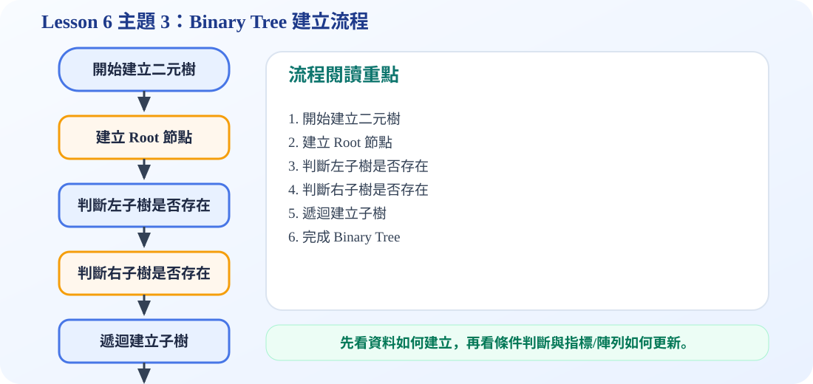

一、Binary Tree 是什麼？
核心概念
Binary tree 可以翻成「二元樹」或「二叉樹」。它和一般 tree 最大的不同，是每個節點最多只能分出兩個子節點。這兩個子節點不是單純的第一個、第二個，而是有明確方向：一個叫做 left child，另一個叫做 right child。
投影片定義：一棵 binary tree 是有限個節點的集合；它可以是空的，也可以由一個 root 和兩棵互不相交的 binary trees 組成，這兩棵子樹分別稱為 left subtree 與 right subtree。
二、互動示意：Root、Left、Right、Leaf
請點選下方按鈕，觀察二元樹中不同位置的節點。
Root 是二元樹最上面的節點。二元樹可以是空樹；若非空，會由 root、left subtree、right subtree 組成。
三、Binary Tree 的三個重點性質
1、可以是空樹
一般 tree 通常至少要有 root；但 binary tree 的定義允許它是 empty。這個性質很重要，因為在遞迴處理 left subtree 或 right subtree 時，遇到沒有節點就可以視為空的 binary tree。
2、每個節點最多兩個孩子
一個節點可以沒有孩子、一個孩子或兩個孩子，但最多就是兩個。這使得 binary tree 在演算法設計上很規律。
3、左與右不能混淆
Binary tree 會區分 left child 和 right child。即使兩棵樹有相同節點，只要左右位置不同，就可能被視為不同的 binary tree。
4、具有遞迴性
root 的 left subtree 本身也是 binary tree；right subtree 本身也是 binary tree。因此後面的 traversal、search、insert 常常會用 recursive algorithm 表示。
四、動畫流程圖：如何判斷是不是 Binary Tree？
五、為什麼二元樹重要？
二元樹是後面很多資料結構的基礎。例如 binary search tree 會利用「左小右大」快速搜尋資料；heap 會利用 complete binary tree 的形狀維持最大值或最小值；expression tree 可以表示算術式。換句話說，binary tree 不只是圖形，它是許多演算法的基本骨架。
可編輯 C 程式範例：含中文註解與線上編輯器
這一段提供可直接修改的 C 程式碼。可以按「複製程式」貼到線上編輯器執行，也可以下載 .c 檔案。
程式題目教學內容：Binary Tree 基本建立
一、程式題目講解
本題用 C 程式建立一個簡單二元樹 root，讓學生理解 binary tree 的節點最多只有 left 與 right 兩個子節點。
二、完整程式碼
完整可執行程式碼已保留在上方「可編輯 C 程式範例：含中文註解與線上編輯器」區塊中，檔名為 lesson6_topic3_demo.c。該程式碼已加入中文註解，學生可以直接複製到 OnlineGDB、Programiz 或 OneCompiler 執行。
三、程式執行結果
Binary Tree Root: A輸出 Binary Tree Root: A，表示程式已建立根節點 A。雖然範例很簡單，但它呈現二元樹節點資料與左右指標初始化的基本方法。
四、程式流程圖與流程圖說明
本頁下方已保留原本的程式流程圖。閱讀流程圖時，可以依序掌握「初始化資料或節點 → 執行主要函式或判斷 → 輸出結果」的過程。流程先定義 Node 結構，再建立 root 節點，將資料放入 A，左右指標初始化為 NULL，最後印出 root 的資料。
五、重要函數與語法說明
createNode(char data)：建立二元樹節點；malloc()：配置節點記憶體；NULL：代表目前沒有左子樹或右子樹；printf()：印出 root 資料。
六、整體說明
本題重點在於二元樹節點的基本型態：一個資料欄位加上 left、right 兩個指標。
程式流程圖：Binary Tree 建立流程
下圖是本主題對應的程式執行流程，適合搭配本頁 C 程式碼一起看。

流程講解
- Binary tree 每個節點最多只有 left child 與 right child。
- 建立節點後，程式要分別判斷左子樹與右子樹是否存在。
- 若子樹存在，就遞迴建立；若不存在，就保留 NULL。
- 完成後 root 會指向整棵二元樹的起點。
這張流程圖把本頁程式的執行順序整理成一條清楚路徑。閱讀時先看輸入與資料如何建立，再看條件判斷、指標或陣列索引如何改變，最後用輸出結果確認程式邏輯是否正確。